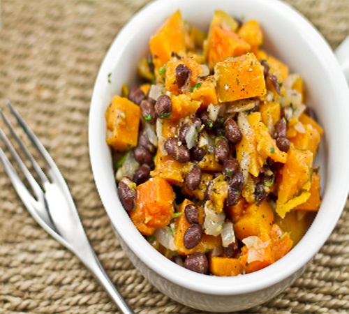

Chronicles Of A Young Mom
Home Page
Sweet Potato and Black Bean Salad

Prep time: 16 minutes Servings: 4-6
Ingredients:
- 2 medium sweet potatoes, peeled and cut into ½-inch chunks
- Juice and zest of 2 limes
- ½ teaspoon salt
- ½ teaspoon black pepper
- 1 teaspoon honey
- 2 tablespoons canola oil
- ½ of one chipotle in adobo sauce, finely chopped (optional)
- 2 scallions, finely chopped
- ½ cup corn
- 1 (15 oz.) can of black beans, rinsed and drained
- ¼ cup cilantro, finely chopped
Directions:
- Place potatoes into a medium saucepan and cover with cold water.
- Bring to a boil and cook until just tender, about 6 minutes. Do not overcook.
- Drain and allow to cool.
- While potatoes are cooking, make dressing. In a large bowl, whisk together lime juice, zest, salt, pepper, honey, canola oil, and chipotle.
- Add cooled potatoes, scallions, corn, beans, and cilantro. Toss gently.
- Serve at room temperature or refrigerate.